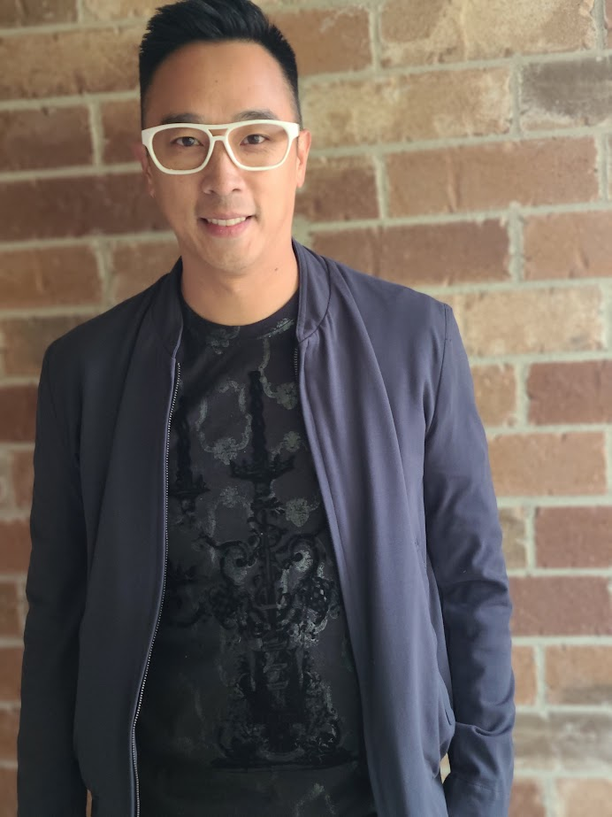
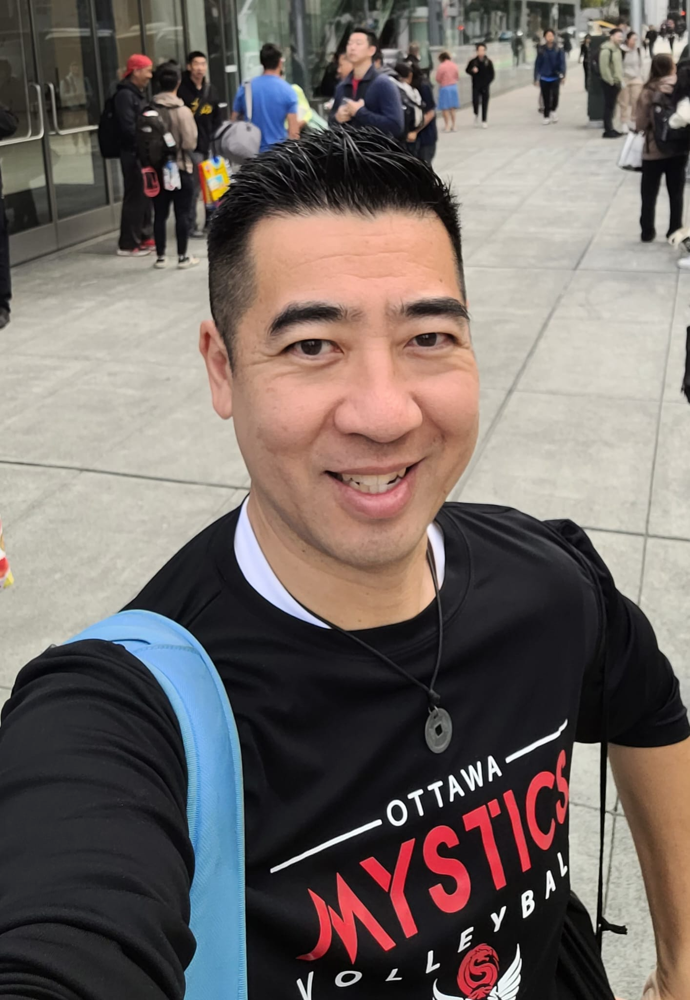
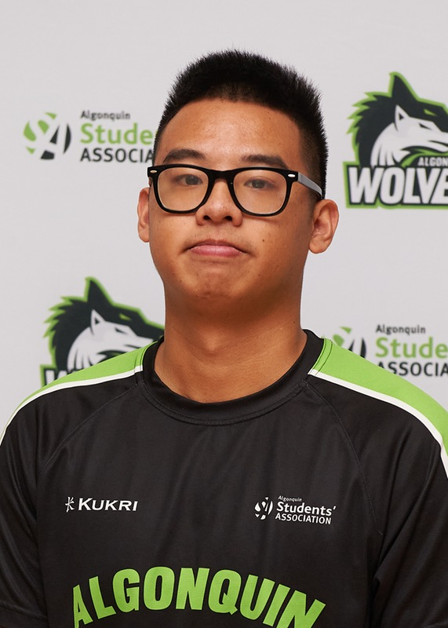
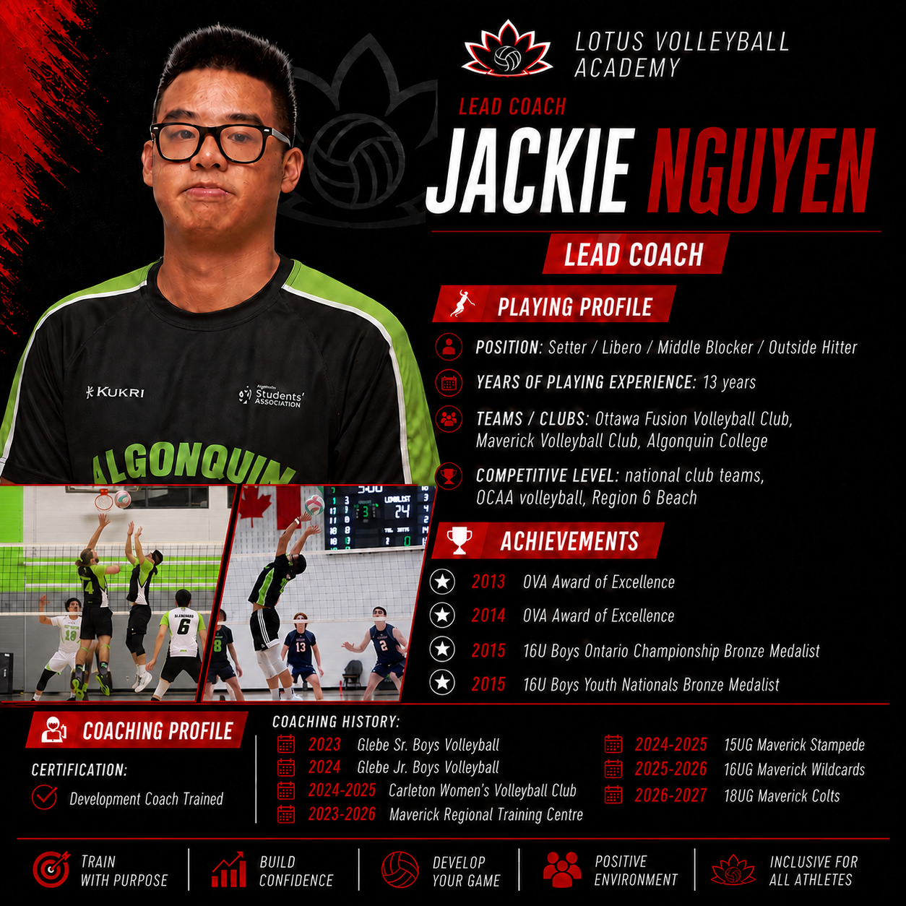
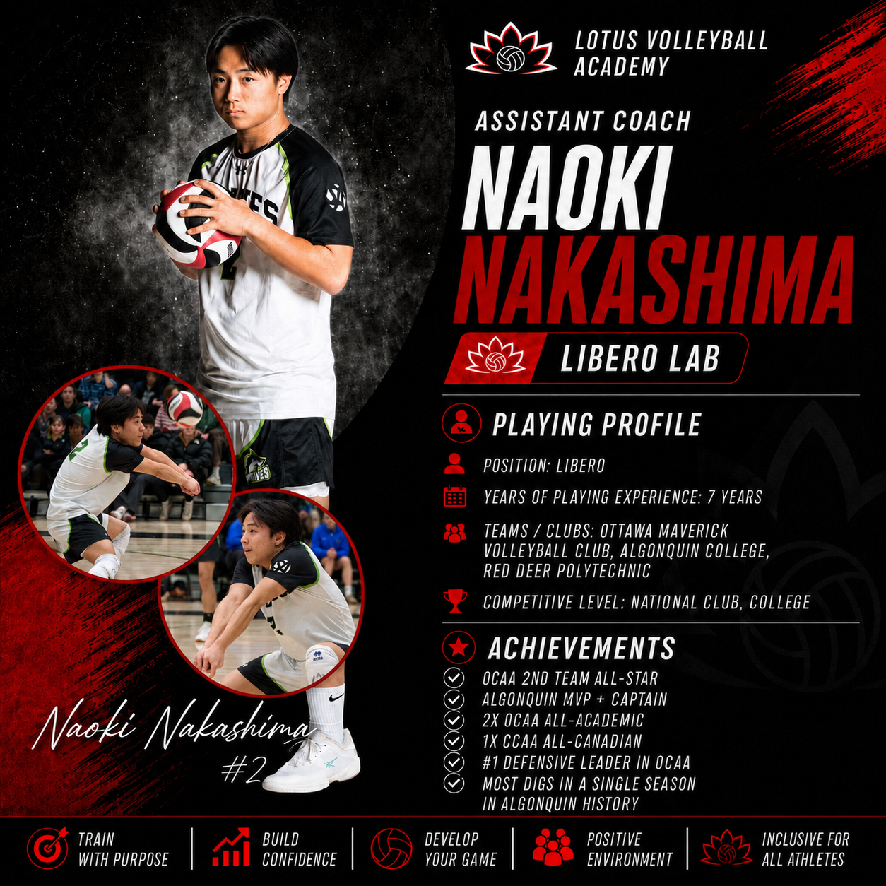
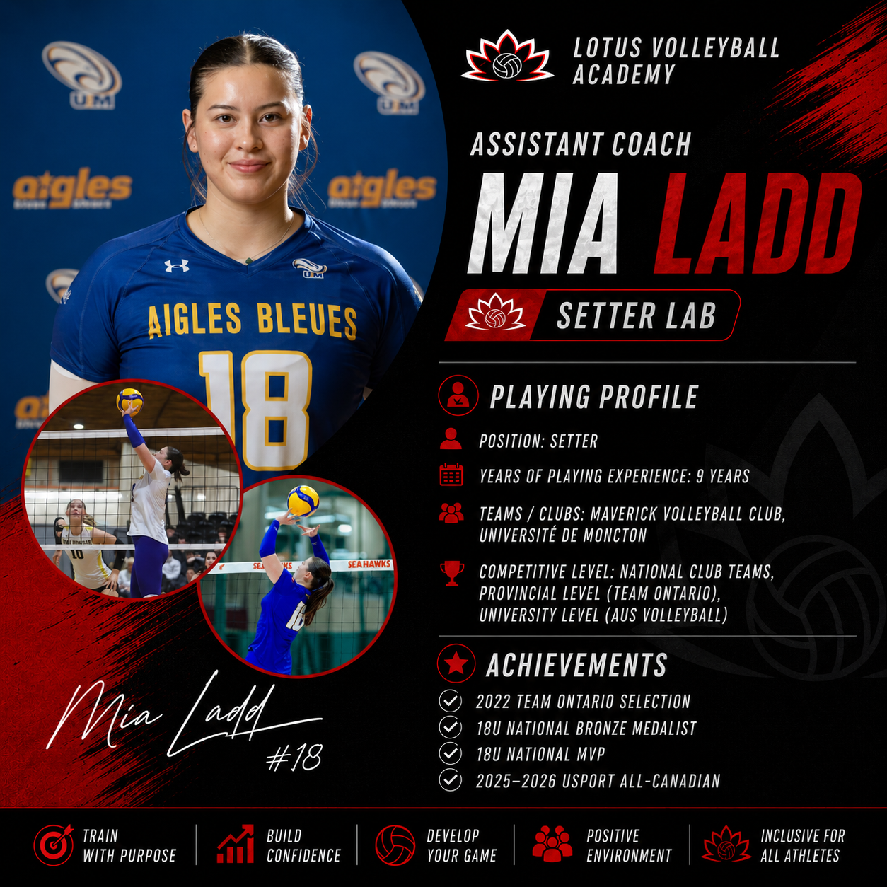
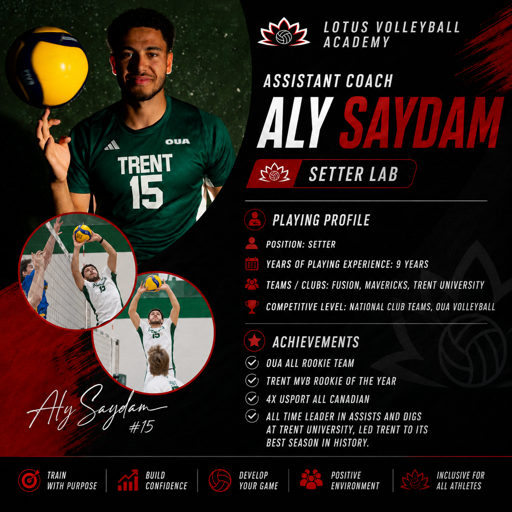

Belonging that lasts
Creating belonging, cultural connection, friendships, family engagement, mentorship, and opportunities to give back.
Ottawa · Asian-Community Founded
Lotus combines high-level volleyball development with culture, leadership, education, mentorship, healthy living, and meaningful community connection.
Structured sessions in a supportive community environment, built for athletes who want more touches, better habits, and clear feedback.
What Lotus Develops
Every Lotus program is designed to strengthen all three at the same time.
Creating belonging, cultural connection, friendships, family engagement, mentorship, and opportunities to give back.
Delivering high-level, personalized volleyball development through detailed, purposeful, and precise coaching.
Building leadership, communication, confidence, career readiness, healthy habits, resilience, and practical life skills.
Our Community
Volleyball brings us together. Community is why we stay. Lotus is an Asian-community-founded, member-centred organization, and volleyball is the doorway into something much larger than a training session.
Alongside high-level development, Lotus supports the whole person and the whole family.
Member-centred by design
How Lotus Delivers
Our program categories are how the three priorities reach athletes, families, and the wider community.
High-level, personalized volleyball training, specialized position labs, video analysis, athlete education, and game understanding.
See Lotus Volleyball DevelopmentCultural experiences, family gatherings, mentorship, recreation, volunteering, fundraising, and meaningful community connection.
See Lotus SocialsLeadership, career discovery, AI literacy, financial literacy, wellness, study skills, intercultural learning, and practical life development.
See Lotus Beyond the CourtWhy the Training Is High Level
High-level, personalized volleyball development in a supportive community environment. Lotus sessions are built around game-like learning, high-quality corrections, and clear athlete accountability — focused on what athletes can apply immediately in club, school, and competitive environments.
Tracked in every development plan
Programming Through the Year
Lotus is not defined by a season. Its programming is rooted in culture, community, athlete development, and personal development. Summer contains the largest concentration of programming because athletes have greater freedom from school and many club obligations — families and community members also have more opportunities to gather, and our community has a long-standing tradition of connecting through summer volleyball and shared experiences.
Lotus programming may change with the season, but its purpose remains the same: strengthening culture, building community, developing athletes, and preparing young people for life beyond the court.
Working With Clubs
Athletes train with Lotus and return to their volleyball clubs, school teams, recreational leagues, regional programs, provincial programs, and community organizations — more skilled, more confident, more knowledgeable, and better prepared.
Lotus complements clubs. It does not replace them.
Athletes return
We have partnered with local clubs and run our labs for their players in exchange for a donation to their club foundation or to support families facing financial barriers.
About Us
Lotus Volleyball Academy was founded in 1998 by Tuan Nguyen and later on joined by Byron Lee as part of an initiative to support the Asian and “9-man” community with high-level volleyball development rooted in the cultural elements and values of Asian culture: respect, community, personal & professional development, and family. This was a response to many Asian players losing opportunities to play further at a competitive level due to the inevitable requirement of height in this sport, despite being very skilled players. Eventually, many players return to the club at the national level as early as 16U, with many Asian athletes having a later growth and physical development.
For over 30 years, our academy has supported the development of individuals from Montreal to Toronto, settling its base in Ottawa in 2008 to coincide with the founding of the 9-man community in Ottawa. Though quiet and private, our reputation has grown over the years for our highly meticulous focus on technical skills. Being smaller players requires maximizing body mechanics, human kinetics, and mental development.
Over the years, many family and friends of our players have asked to be invited into the training. We have also partnered with local clubs and run our labs for their players in exchange for a donation to either their club foundation or to support those with financial challenges in participating with the hosting club.
In 2026, we decided to open the doors by adding an extra training day on an invite-only basis upon registration. With this evolution of our community, our mission, too, has evolved in order to become a more active partner alongside volleyball clubs in developing their players.

Father · 30-year digital entrepreneur · Community builder
Tuan brings over 34 years of volleyball experience at the national level and 30 years of coaching. His specialty is technical training for setting and hitting, and he has run private programs across Quebec and Ontario, training many varsity players across Canada. That initiative grew into Lotus Volleyball Academy over the years. Tuan currently runs the youth training program for competitive players.

Father · Public servant · Founder of the Ottawa Mystics
Byron has over 20 years of volleyball experience as a player and coach and is the founder of the 9-man volleyball community in Ottawa, the Ottawa Mystics. He has played for national clubs in Montreal and Toronto and now leads the junior development team for the community — advanced, typically national-level club players from Quebec and Ontario. As the volleyball-IQ leader of the community, Byron drives team development, strategy, and culture.

12+ years of volleyball · Youth development lead
Jackie has over 12 years of volleyball experience and is the newest addition to Lotus Volleyball Academy through succession planning. He currently runs the youth development program alongside Tuan — and no, he’s not related to Tuan, though they’re like brothers. His incredible commitment to both player development and the wider community has made it clear that he will take Lotus Volleyball Academy to the next level.
Executive leader · Governance & strategy · 15+ years leading people
Thérèse is an executive leader with 15+ years of experience in strategy, governance, organizational design, and workforce transformation across the Government of Canada. She helps sport organizations align leadership, people, and operations to support sustainable growth and lasting impact.
Her experience includes governance, policy, risk management, board and committee leadership, volleyball club operations, strategic planning, and program development. She is also an experienced people leader, coach, and mentor who supports high-performing teams and develops athletes, coaches, and emerging leaders.
With a law degree and Bachelor of Education, Thérèse brings a unique combination of legal, educational, governance, and leadership expertise.
Lotus is an Asian-community-founded, member-centred academy. Our mission, our vision, our three organizational priorities, and what being member-centred means in practice are set out together on the Our Community page.
Read our mission and visionCoaching Staff
Lotus Volleyball Academy is led by coaches with national-level playing and coaching experience at the club, college, and university levels.

Lead Coach
Assistant Coaches

Libero · 7 years · National Club & College

Setter · 9 years · National Club, Team Ontario & AUS

Setter · 9 years · National Club & OUA
Pricing
Drop in for a single position session or commit to the full five-week program. Same pricing across every lab, so athletes can choose the lab that fits their game.
Drop-in $75 · 5-week program $300 ($60 per session)
Invitation Request
Every athlete begins by submitting contact information, who referred them, and their training background. Lotus extends invitations based on fit with the participants currently in the program, including position, goals, experience, and current development needs.
Request an InvitationQuestions
No. Lotus is a volleyball academy and community, not a competitive club. Athletes keep playing for their own club, school, or league team and come to Lotus to sharpen specific parts of their game.
Community Building, Athlete Development, and Personal Development. Every Lotus program is designed to strengthen all three at the same time. You can read more on the Our Community page.
The volleyball side of Lotus — high-level, personalized training through small groups, detailed technical instruction, purposeful repetitions, video analysis, position-specific labs, and advanced game understanding. See Lotus Volleyball Development.
The times the community comes together away from formal training — family open gyms, parent learning circles, heritage nights and potlucks, storytelling, cultural celebrations, service projects, exchanges, watch parties, and season socials. See Lotus Socials.
Programs that help young people become confident, capable, healthy, and future-ready: leadership, career discovery, AI literacy, financial literacy, cultural strength, intercultural understanding, health and wellness, and study skills. See Lotus Beyond the Court.
Through the year. Summer holds the largest concentration of programming because athletes have more freedom from school and club commitments and families have more chances to gather. During the school year Lotus runs Beyond the Court, Socials, mentorship, leadership, community activities, and limited in-season volleyball development.
It means Lotus is not defined by a season. The programming is rooted in culture, community, athlete development, and personal development, and it is shaped around what families can take part in at that time of year. See Culture-Focused Programming.
Programs marked Members Only are designed specifically for Lotus community members, which is what lets them stay small and personal. Every program on the site carries an access label, and all three are explained on the Membership page.
Yes. Programs marked Invite Only are opened through an evaluation, a referral, previous participation, or a coach invitation. Selected Setter Lab and Libero Lab sessions may also include approved invited guests when it is a good fit for the group.
The Setter Lab and the Libero Lab. They are the only Lotus programs that may open places to approved invited guests, and those places are offered at the academy’s discretion so group size and training quality are protected.
No. The Setter Lab and Libero Lab are invite only rather than open public registration. Athletes ask to be considered through the training request form, and an invitation follows a look at game footage and fit with the current group.
Lotus is designed to complement existing volleyball pathways. Athletes train with Lotus and return to their clubs, school teams, recreational leagues, and regional and provincial programs more skilled, more confident, more knowledgeable, and better prepared. Lotus complements clubs. It does not replace them.
Small groups, three coaches, technical correction on every rep, skill progressions, game-based learning, video analysis, and an individual development plan for each athlete.
Personalized — coaching speaks to the individual athlete, not the room. Purposeful — every repetition has a reason behind it. Precise — corrections are specific enough to act on the next ball.
A Members Only program, in partnership with Peak Centre for Human Performance, that connects high-level athlete development with laboratory-based sports science. Through testing, education, and individualized feedback, athletes learn how movement, recovery, sleep, nutrition, physical readiness, and healthy routines influence performance.
Send a membership inquiry through the Membership page and a member of the Lotus team will follow up by email. Families are also welcome at Lotus Socials, and there is always room for parents and community members who want to volunteer, mentor, or help run an event.
Practical Details
Youth athletes who want extra development outside of club or school volleyball, especially athletes looking for position-specific feedback and more high-quality reps. Lotus welcomes athletes from all backgrounds who are passionate about improving their skills and growing within the sport.
No. Athletes can be grouped by level, position, and goals so training stays challenging but appropriate.
Position labs run two hours, once a week, with three coaches across two courts and a small group of athletes. Sessions combine focused technical work, progressions, and game-based reps with direct feedback.
Sessions are based in Ottawa. Confirmed gym locations, dates, and times can be shared after registration.
Private training includes individual coaching, video analysis when available, an individual improvement focus, and clear feedback for athletes to review on their own.
Use the training request form for private sessions, small groups, and position labs. Requests are reviewed for coach and gym availability before anything is confirmed.
Gallery
Training sessions, competitions, and community highlights from Lotus Volleyball Academy.


Get Started
Come train, learn, connect, give back, and grow with us.
Ready to train? Use the Training Request Form. Private training is $135 per session; small group pricing is TBD based on group numbers.